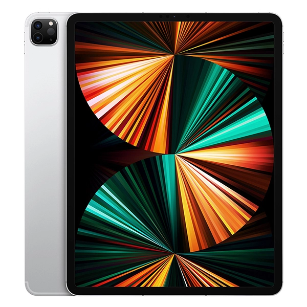

Ipad Pro Generasi ke-6 (12.9-inch)

Warna
Kapasitas1
- 128 GB
- 256 GB
- 512 GB
- 1 TB
- 2 TB
Ukuran dan Berat2
- Model Wi-Fi
- Lebar: 214,9 mm
- Tinggi: 280,6 mm
- Tebal: 6,4 mm
- Berat: 682 g
- Model Wi-Fi + Cellular
- Lebar: 214,9 mm
- Tinggi: 280,6 mm
- Tebal: 6,4 mm
- Berat: 684 g
Tombol dan Konektor
- Lima mikrofon
- Audio empat speaker
- Tombol atas
- Kamera
- Volume naik/turun
- Konektor magnetis
- Wadah nano-SIM
- Smart Connector
- Thunderbolt/ USB 4
Isi Kotak
- iPad Pro 12,9 inci (generasi ke-6)
- Kabel Pengisian Daya USB-C (1 meter)
- Adaptor Daya USB-C 20 W
Layar
Layar Liquid Retina XDR
- Layar Multi-Touch dengan lampu latar LED mini 12,9 inci (diagonal) dengan teknologi IPS
- Sistem lampu latar 2D dengan 2.596 zona peredupan lokal dengan rangkaian penuh
- Resolusi 2732 x 2048 dengan 264 piksel per inci (ppi)
- Teknologi ProMotion
- Layar warna luas (P3)
- Layar True Tone
- Lapisan oleophobic anti sidik jari
- Layar yang dilaminasi penuh
- Lapisan anti reflektif
- Reflektivitas 1,8%
- Kecerahan SDR: Maks 600 nit
- Kecerahan XDR: layar penuh maks 1.000 nit, puncak 1.600 nit (khusus konten HDR)
- Rasio kontras 1.000.000:1
- Mendukung Apple Pencil (generasi ke-2)
- Fitur layang Apple Pencil
Layar iPad Pro 12,9 inci memiliki sudut melengkung yang mengikuti desain lekukan yang indah, dan semua sudut ini berada di dalam bidang persegi standar. Jika diukur sebagai persegi standar, layarnya berukuran 12,9 inci secara diagonal (area bidang layar berukuran lebih kecil).
Chip
Chip Apple M2
- CPU 8-core dengan 4 core performa dan 4 core efisiensi
- GPU 10-core
- Neural Engine 16-core
- Bandwidth memori 100 GB/dtk
- RAM 8 GB pada model dengan penyimpanan 128 GB, 256 GB, atau 512 GB
- RAM 16 GB pada model dengan penyimpanan 1 TB atau 2 TB
Media engine
- H.264, HEVC, ProRes, dan ProRes RAW yang didukung hardware
- Mesin dekode video
- Mesin enkode video
- Mesin enkode dan dekode ProRes
Kamera
- Sistem kamera Pro: kamera Wide dan Ultra Wide
- Wide: 12 MP, bukaan ƒ/1.8
- Ultra Wide: 10 MP, bukaan ƒ/2.4, dan bidang pandang 125°
- Zoom optik 2x memperkecil
- Zoom digital hingga 5x
- Lensa lima elemen (Wide dan Ultra Wide)
- Flash True Tone lebih terang
- Panorama (hingga 63 MP)
- Penutup lensa kristal safir
- Fokus otomatis dengan Focus Pixels (Wide)
- Smart HDR 4
- Pengambilan foto dan Live Photo dengan rentang warna luas
- Koreksi lensa (Ultra Wide)
- Koreksi mata merah yang disempurnakan
- Penanda lokasi foto
- Penstabilan gambar otomatis
- Mode beruntun
- Format gambar yang diambil: HEIF dan JPEG
Perekaman Video
- Perekaman video 4K pada kecepatan 24 fps, 25 fps, 30 fps, atau 60 fps (Wide)
- Perekaman video HD 1080p pada kecepatan 25 fps, 30 fps, atau 60 fps
- Perekaman video HD 720p pada kecepatan 30 fps
- Perekaman video ProRes hingga 4K pada kecepatan 30 fps (1080p pada kecepatan 30 fps untuk penyimpanan 128 GB)
- Zoom optik 2x memperkecil
- Zoom audio
- Flash True Tone lebih terang
- Dukungan video slo-mo untuk 1080p pada kecepatan 120 fps atau 240 fps
- Video selang waktu dengan penstabilan
- Rentang dinamis yang diperluas untuk video hingga kecepatan 30 fps
- Penstabilan video sinematik (4K, 1080p, dan 720p)
- Video fokus otomatis kontinu
- Zoom pemutaran
- Format video yang direkam: HEVC dan H.264
- Perekaman stereo
Kamera TrueDepth
- Kamera Ultra Wide 12 MP, bidang pandang 122°
- Bukaan ƒ/2.4
- Mode Potret dengan bokeh yang disempurnakan dan Depth Control
- Pencahayaan Potret dengan enam efek (Alami, Studio, Kontur, Panggung, Panggung Mono, High-Key Mono)
- Animoji dan Memoji
- Smart HDR 4
- Perekaman video HD 1080p pada kecepatan 25 fps, 30 fps, atau 60 fps
- Video selang waktu dengan penstabilan
- Rentang dinamis yang diperluas untuk video hingga kecepatan 30 fps
- Penstabilan video sinematik (1080p dan 720p)
- Pengambilan foto dan Live Photo dengan rentang warna luas
- Koreksi lensa
- Retina Flash
- Penstabilan gambar otomatis
- Mode beruntun
Panggilan Video3
- Video FaceTime
- Center Stage
- iPad ke segala perangkat berkemampuan FaceTime melalui Wi-Fi atau seluler
Panggilan Audio3
- Audio FaceTime
- iPad ke segala perangkat berkemampuan FaceTime melalui Wi-Fi atau seluler
Speaker
Mikrofon
- Lima mikrofon dengan kualitas studio untuk panggilan, perekaman video, dan perekaman audio
Seluler dan Nirkabel
- Semua model
Wi-Fi 6E (802.11ax) dengan 2x2 MIMO; kecepatan hingga 2.4 Gbps4
Band ganda simultan
Bluetooth 5.3
- Model Wi-Fi + Cellular
5G (sub-6 GHz) dengan 4x4 MIMO
Gigabit LTE dengan 4x4 MIMO dan LAA
- Model A2761 dan A2437:
5G NR (Band n1, n2, n3, n5, n7, n8, n12, n14, n20, n25, n26, n28, n29, n30, n38, n40, n41, n48, n66, n70, n71, n77, n78, n79)5
FDD-LTE (Band 1, 2, 3, 4, 5, 7, 8, 11, 12, 13, 14, 17, 18, 19, 20, 21, 25, 26, 28, 29, 30, 32, 66, 71)
TD-LTE (Band 34, 38, 39, 40, 41, 42, 46, 48)
UMTS/ HSPA/ HSPA+/ DC‑HSDPA (850, 900, 1700/2100, 1900, 2100 MHz)
Hanya data6
eSIM7
Selengkapnya tentang seluler
Kartu SIM
Lokasi
- Semua model
Kompas digital
Wi-Fi
Mikrolokasi iBeacon
- Model Wi-Fi + Cellular
GPS/GNSS
Seluler
Sensor
- Face ID
- LiDAR Scanner
- Gyro tiga sumbu
- Akselerometer
- Barometer
- Sensor cahaya sekitar
Face ID
- Hadir berkat kamera TrueDepth untuk pengenalan wajah
- Buka kunci iPad
- Amankan data pribadi dalam aplikasi
- Lakukan pembelian dari iTunes Store dan App Store
Pengisian Daya dan Ekspansi
- Port Thunderbolt/USB 4 dengan dukungan untuk:
Pengisian daya
DisplayPort
Thunderbolt 3 (hingga 40 Gbps)
USB 4 (hingga 40 Gbps)
USB 3.1 Gen 2 (hingga 10 Gbps)
Dukungan Layar
- Mendukung resolusi asli sepenuhnya pada layar bawaan dalam jutaan warna
Mendukung satu layar eksternal dengan resolusi hingga 6K pada 60 Hz
- Output video digital Thunderbolt 3
Output DisplayPort asli melalui USB‑C
Output VGA, HDMI, DVI, dan Thunderbolt 2 didukung menggunakan adaptor (dijual terpisah)8
- Video mirroring
AirPlay hingga 4K untuk mirroring, foto, dan video ke Apple TV (generasi ke–2 atau lebih baru) atau smart TV berkemampuan AirPlay 2
Dukungan video mirroring dan video keluar melalui Adaptor Multiport AV Digital USB-C dan Adaptor Multiport VGA USB-C (adaptor dijual terpisah)8
Daya dan Baterai9
- Baterai lithium-polymer isi ulang bawaan 40,88 watt‑jam
- Hingga 10 jam untuk menjelajahi web melalui Wi-Fi atau menonton video
- Pengisian daya melalui adaptor daya atau USB-C ke sistem komputer
- Model Wi-Fi + Cellular
- Hingga 9 jam untuk menjelajahi web menggunakan jaringan data seluler
Sistem Operasi
iPadOS
iPadOS hadir dengan fitur canggih dan aplikasi bawaan yang dirancang untuk memanfaatkan kemampuan unik iPad.
Selengkapnya tentang iPadOS
Aksesibilitas
Fitur aksesibilitas bawaan dengan bantuan untuk disabilitas penglihatan, mobilitas, pendengaran, dan kognitif membantu Anda memaksimalkan penggunaan iPad Anda.
Pelajari lebih lanjut mengenai Aksesibilitas
Fitur-fitur meliputi:
- VoiceOver
- Zoom
- Pembesar
- Konten Lisan
- Kontrol Pengalihan
- AssistiveTouch
- Dikte
- Deskripsi Audio
- Subtitle dan Teks Tertulis
Aplikasi Bawaan
- App Store
- Buku
- Kalender
- Kamera
- Jam
- Kontak
- FaceTime
- File
- Lacak
- Rumah
- iTunes Store
- Pembesar
- Mail
- Peta
- Pengukur
- Pesan
- Musik
- Catatan
- Photo Booth
- Foto
- Podcasts
- Pengingat
- Safari
- Pengaturan
- Pintasan
- Saham
- Kiat
- Terjemahkan
- TV
- Memo Suara
- Cuaca
Aplikasi Gratis dari Apple
Pages, Numbers, Keynote, iMovie, GarageBand, dan Clips sudah terinstal di iPad.
- Pages
- Numbers
- Keynote
- iMovie
- GarageBand
- Clips
- Swift Playgrounds
- Dukungan
Persyaratan Sistem
- ID Apple (diperlukan untuk beberapa fitur)
- Akses internet10
- Penyelarasan dengan Mac atau PC memerlukan:
macOS Catalina 10.15 atau lebih baru menggunakan Finder
macOS El Capitan 10.11.6 sampai macOS Mojave 10.14.6 menggunakan iTunes 12.8 atau lebih baru
Windows 10 dan iTunes 12.12 atau lebih baru (unduh gratis dari apple.com/id/itunes/download)
Bahasa
- Dukungan bahasa
Inggris (Australia, Inggris, AS), Tionghoa (Sederhana, Tradisional, Tradisional – Hong Kong), Prancis (Kanada, Prancis), Jerman, Italia, Jepang, Korea, Spanyol (Amerika Latin, Spanyol), Arab, Bulgaria, Katalan, Kroasia, Ceko, Denmark, Belanda, Finlandia, Yunani, Ibrani, Hindi, Hungaria, Indonesia, Kazakh, Melayu, Norwegia, Polandia, Portugis (Brasil, Portugal), Rumania, Rusia, Slovakia, Swedia, Thai, Turki, Ukraina, Vietnam
- Dukungan papan ketik QuickType
Inggris (Australia, Kanada, India, Jepang, Selandia Baru, Singapura, Afrika Selatan, Inggris, AS), Tionghoa – Sederhana (Tulisan Tangan, Pinyin QWERTY, Pinyin 10 Key, Shuangpin, Stroke), Tionghoa – Tradisional (Cangjie, Tulisan Tangan, Pinyin QWERTY, Pinyin 10 Key, Shuangpin, Stroke, Sucheng, Zhuyin), Prancis (Belgia, Kanada, Prancis, Swiss), Jerman (Austria, Jerman, Swiss), Italia, Jepang (Kana, Romaji), Korea (2-Set, 10 Key), Spanyol (Amerika Latin, Meksiko, Spanyol), Ainu, Albania, Amhar, Apache (Western), Arab, Arab (Najdi), Armenia, Assam, Asiria, Azerbaijan, Bengali, Belarusia, Bodo, Bulgaria, Burma, Kanton – Tradisional (Cangjie, Tulisan Tangan, Fonetik, Stroke, Sucheng), Katalan, Cherokee, Kroasia, Ceko, Denmark, Dhivehi, Dogri, Belanda, Dzongkha, Emoji, Estonia, Faroe, Filipina, Finlandia, Flemish, Fula (Adlam), Georgia, Yunani, Gujarati, Hawaii, Ibrani, Hindi (Devanagari, Latin, Transliterasi), Hungaria, Islandia, Igbo, Indonesia, Gaelic Irlandia, Kannada, Kashmir (Arab, Devanagari), Kazakh, Khmer, Konkani (Devanagari), Kurdi (Arab, Latin), Kirgiz, Lao, Latvia, Lituania, Makedonia, Maithili, Melayu (Arab, Latin), Malayalam, Malta, Manipuri (Bengali, Meetei Mayek), Māori, Marathi, Mongolia, Navajo, Nepal, Norwegia (Bokmål, Nynorsk), Odia, Pashtun, Persia, Persia (Afganistan), Polandia, Portugis (Brasil, Portugal), Punjabi, Rohingya, Rumania, Rusia, Samoa, Sanskerta, Santali (Devanagari, Ol Chiki), Serbia (Sirilik, Latin), Sindhi (Arab, Devanagari), Sinhala, Slovakia, Slovenia, Swahili, Swedia, Tajik, Tamil (Anjal, Tamil 99), Telugu, Thai, Tibet, Tonga, Turki, Turkmen, Ukraina, Urdu, Uighur, Uzbek (Arab, Sirilik, Latin), Vietnam (Telex, VIQR, VNI), Wales, Yiddi
- Dukungan papan ketik QuickType dengan koreksi otomatis
Arab, Arab (Najdi), Bengali, Bulgaria, Katalan, Cherokee, Tionghoa – Sederhana (Pinyin QWERTY), Tionghoa – Tradisional (Pinyin QWERTY), Tionghoa – Tradisional (Zhuyin), Kroasia, Ceko, Denmark, Belanda, Inggris (Australia, Kanada, India, Jepang, Selandia Baru, Singapura, Afrika Selatan, Inggris, AS), Estonia, Filipina, Finlandia, Belanda (Belgia), Prancis (Belgia), Prancis (Kanada), Prancis (Prancis), Prancis (Swiss), Jerman (Austria), Jerman (Jerman), Jerman (Swiss), Yunani, Gujarati, Hawaii, Ibrani, Hindi (Devanagari, Latin, Transliterasi), Hungaria, Islandia, Indonesia, Gaelic Irlandia, Italia, Jepang (Kana), Jepang (Romaji), Korea (2-set, 10 Key), Latvia, Lituania, Makedonia, Melayu, Marathi, Norwegia (Bokmål), Norwegia (Nynorsk), Persia, Persia (Afganistan), Polandia, Portugis (Brasil), Portugis (Portugal), Punjabi, Rumania, Rusia, Serbia (Sirilik), Serbia (Latin), Slovakia, Slovenia, Spanyol (Amerika Latin), Spanyol (Meksiko), Spanyol (Spanyol), Swedia, Tamil (Anjal), Tamil (Tamil 99), Telugu, Thai, Turki, Ukraina, Urdu, Vietnam (Telex)
- Dukungan papan ketik QuickType dengan input prediktif
Inggris (Australia, Kanada, India, Jepang, Singapura, Afrika Selatan, Inggris, AS), Tionghoa (Sederhana, Tradisional), Prancis (Belgia, Kanada, Prancis, Swiss), Jerman (Austria, Jerman, Swiss), Italia, Jepang, Korea, Spanyol (Amerika Latin, Meksiko, Spanyol), Arab, Arab (Najdi), Kanton (Tradisional), Belanda, Hindi (Devanagari, Latin), Portugis (Brasil, Portugal), Rusia, Swedia, Thai, Turki, Vietnam
- Dukungan papan ketik QuickType dengan input beberapa bahasa
Inggris (Australia, Kanada, India, Jepang, Selandia Baru, Singapura, Afrika Selatan, Inggris, AS), Tionghoa – Sederhana (Pinyin), Tionghoa – Tradisional (Pinyin), Prancis (Prancis), Prancis (Belgia), Prancis (Kanada), Prancis (Swiss), Jerman (Jerman), Jerman (Austria), Jerman (Swiss), Italia, Jepang (Romaji), Portugis (Brasil), Portugis (Portugal), Spanyol (Spanyol), Spanyol (Amerika Latin), Spanyol (Meksiko), Belanda (Belgia), Belanda (Belanda), Hindi (Latin), Vietnam
- Dukungan papan ketik QuickType dengan saran kontekstual
Inggris (Australia, Kanada, India, Jepang, Selandia Baru, Singapura, Afrika Selatan, Inggris, AS), Tionghoa (Sederhana), Prancis (Belgia), Prancis (Kanada), Prancis (Prancis), Prancis (Swiss), Jerman (Austria), Jerman (Jerman), Jerman (Swiss), Italia, Spanyol (Amerika Latin), Spanyol (Meksiko), Spanyol (Spanyol), Arab, Arab (Najdi), Belanda (Belgia), Belanda (Belanda), Hindi (Devanagari), Hindi (Latin), Rusia, Swedia, Portugis (Brasil), Turki, Vietnam
- Dukungan papan ketik QuickPath
Inggris (Australia, Kanada, India, Jepang, Selandia Baru, Singapura, Afrika Selatan, Inggris, AS), Tionghoa (Sederhana, Pinyin, QWERTY), Tionghoa (Tradisional, Pinyin, QWERTY), Prancis (Kanada), Prancis (Prancis), Prancis (Swiss), Jerman (Austria), Jerman (Jerman), Jerman (Swiss), Italia, Spanyol (Amerika Latin), Spanyol (Meksiko), Spanyol (Spanyol), Portugis (Brasil), Portugis (Portugal), Belanda (Belgia), Belanda (Belanda), Swedia, Vietnam
- Bahasa Siri
Inggris (Australia, Kanada, India, Irlandia, Selandia Baru, Singapura, Afrika Selatan, Inggris, AS), Spanyol (Cile, Meksiko, Spanyol, AS), Prancis (Belgia, Kanada, Prancis, Swiss), Jerman (Austria, Jerman, Swiss), Italia (Italia, Swiss), Jepang (Jepang), Korea (Republik Korea), Mandarin (Tiongkok daratan, Taiwan), Kanton (Tiongkok daratan, Hong Kong), Arab (Arab Saudi, Uni Emirat Arab), Denmark (Denmark), Belanda (Belgia, Belanda), Finlandia (Finlandia), Ibrani (Israel), Melayu (Malaysia), Norwegia (Norwegia), Portugis (Brasil), Rusia (Rusia), Swedia (Swedia), Thai (Thailand), Turki (Turki)
- Bahasa dikte
Inggris (Australia, Kanada, India, Irlandia, Malaysia, Selandia Baru, Filipina, Arab Saudi, Singapura, Afrika Selatan, UEA, Inggris, AS), Kanton (Tiongkok daratan, Hong Kong), Tionghoa Mandarin (Tiongkok daratan, Taiwan), Prancis (Belgia, Kanada, Prancis, Luksemburg, Swiss), Jerman (Austria, Jerman, Swiss), Italia (Italia, Swiss), Jepang, Korea, Spanyol (Cile, Kolombia, Meksiko, Spanyol, AS), Portugis (Brasil, Portugal), Arab (Kuwait, Qatar, Arab Saudi, UEA), Katalan, Kroasia, Ceko, Denmark, Belanda (Belgia, Belanda), Finlandia, Yunani, Ibrani, Hindi, Hungaria, Indonesia, Melayu, Norwegia (Bokmål), Polandia, Rumania, Rusia, Shanghai (Tiongkok daratan), Slovakia, Swedia, Thai, Turki, Ukraina, Vietnam
- Dukungan kamus ekabahasa
Inggris (Inggris, AS), Tionghoa (Sederhana, Tradisional, Tradisional – Hong Kong), Denmark, Belanda, Prancis, Jerman, Ibrani, Hindi, Italia, Jepang, Korea, Norwegia, Portugis, Rusia, Spanyol, Swedia, Thai, Turki
- Dukungan kamus idiom
Tionghoa Sederhana, Tionghoa Tradisional – Inggris, Kanton – Inggris
- Dukungan kamus dwibahasa
Arab – Inggris, Bengali – Inggris, Tionghoa (Sederhana) – Inggris, Tionghoa (Tradisional) – Inggris, Ceko – Inggris, Belanda – Inggris, Finlandia – Inggris, Prancis – Inggris, Prancis – Jerman, Jerman – Inggris, Gujarati – Inggris, Hindi – Inggris, Hungaria –Inggris, Indonesia – Inggris, Italia – Inggris, Jepang – Inggris, Jepang – Tionghoa (Sederhana), Korea – Inggris, Polandia – Inggris, Portugis – Inggris, Rusia – Inggris, Spanyol – Inggris, Tamil – Inggris, Telugu – Inggris, Thai – Inggris, Urdu – Inggris, Vietnam – Inggris
- Tesaurus
Inggris (Inggris, AS), Tionghoa (Sederhana)
- Pemeriksaan ejaan
Inggris (Australia, Kanada, India, Jepang, Selandia Baru, Singapura, Afrika Selatan, Inggris, AS), Prancis (Belgia, Kanada, Prancis, Swiss), Jerman (Austria, Jerman, Swiss), Italia, Spanyol (Amerika Latin, Meksiko, Spanyol), Arab, Arab (Najdi), Bulgaria, Ceko, Denmark, Belanda (Belanda, Belgia), Finlandia, Yunani, Hindi (Devanagari), Hungaria, Gaelic Irlandia, Norwegia (Bokmål, Nynorsk), Polandia, Portugis (Brasil, Portugal), Punjabi, Rumania, Rusia, Swedia, Telugu, Turki, Vietnam
- Wilayah yang didukung Apple Pay
Argentina, Armenia, Australia, Austria, Azerbaijan, Bahrain, Belarusia, Belgia, Brasil, Bulgaria, Kanada, Tiongkok daratan,11 Kolombia, Kosta Rika, Kroasia, Siprus, Republik Ceko, Denmark, Estonia, Kepulauan Faroe, Finlandia, Prancis, Georgia, Jerman, Yunani, Greenland, Guernsey, Hong Kong, Hungaria, Islandia, Irlandia, Pulau Man, Israel, Italia, Jepang, Jersey, Kazakhstan, Latvia, Liechtenstein, Lituania, Luksemburg, Makau, Malaysia, Malta, Meksiko, Moldova, Monako, Montenegro, Belanda, Selandia Baru, Norwegia, Palestina, Peru, Polandia, Portugal, Qatar, Rumania, Rusia, San Marino, Arab Saudi, Serbia, Singapura, Slovakia, Slovenia, Afrika Selatan, Spanyol, Swedia, Swiss, Taiwan, Inggris, Ukraina, Uni Emirat Arab, AS, Kota Vatikan
Pemutaran Video
- Format yang didukung mencakup HEVC, H.264, dan ProRes
- HDR dengan Dolby Vision, HDR10, dan HLG
Pemutaran Audio
- Format yang didukung mencakup AAC, MP3, Apple Lossless, FLAC, Dolby Digital, Dolby Digital Plus, dan Dolby Atmos
- Pemutaran Audio Spasial
- Batas volume maksimum yang dapat dikonfigurasi pengguna
Dukungan Lampiran Mail
- Jenis dokumen yang dapat dilihat
.jpg, .tiff, .gif (gambar); .doc dan .docx (Microsoft Word); .htm dan .html (halaman web); .key (Keynote); .numbers (Numbers); .pages (Pages); .pdf (Preview dan Adobe Acrobat); .ppt dan .pptx (Microsoft PowerPoint); .txt (text); .rtf (rich text format); .vcf (informasi kontak); .xls dan .xlsx (Microsoft Excel); .zip; .ics; .usdz (USDZ Universal); .pkpass (Dompet)
Persyaratan Lingkungan
- Suhu lingkungan pengoperasian: 0 hingga 35 °C
- Suhu non-operasional: −20 hingga 45 °C
- Kelembapan relatif: 5% hingga 95% non-kondensasi
- Ketinggian beroperasi: teruji hingga 3.000 m
iPad Pro dan Lingkungan
iPad Pro dirancang dengan fitur berikut untuk mengurangi dampak terhadap lingkungan:12
Lihat Laporan Lingkungan Produk iPad Pro
Dibuat dengan bahan yang lebih baik
- Penutup berbahan aluminium 100% daur ulang
- 100% unsur logam tanah langka daur ulang dalam semua magnet
- 100% timah daur ulang dalam solder untuk beberapa papan sirkuit cetak
- Emas 100% daur ulang dalam pelat untuk beberapa papan sirkuit cetak
- Timah 100% daur ulang dalam foil logic board utama
- 35% atau lebih kandungan plastik daur ulang di berbagai komponen
Hemat energi
- Besertifikasi ENERGY STAR®13
Proses kimia yang lebih cerdas14
- Kaca layar bebas arsenik
- Bebas merkuri, BFR, PVC, dan berilium
Manufaktur ramah lingkungan
- Program Zero Waste Apple membantu para pemasok menghilangkan limbah yang dikirim ke TPA
- Semua lokasi pemasok perakitan akhir kini tengah beralih ke penggunaan 100% energi terbarukan untuk produksi Apple
Pengemasan yang bertanggung jawab
- 100% serat kayu primer berasal dari hutan yang dikelola secara bertanggung jawab
- Kemasan berbahan 98% serat dan tanpa plastik pembungkus
Apple dan Lingkungan
Kami berkomitmen untuk membuat produk tanpa memboroskan sumber daya alam dari bumi, dan mencapai status bebas karbon di seluruh bisnis kami, termasuk produk, pada tahun 2030.
Lihat komitmen Apple
- Ruang tersedia lebih sedikit dan bergantung pada banyak faktor. Kapasitas penyimpanan dapat berubah berdasarkan versi perangkat lunak, pengaturan, dan model iPad. 1 GB = 1 miliar byte; 1 TB = 1 triliun byte. Kapasitas terformat aktual lebih sedikit.
- Ukuran dan berat bervariasi, tergantung konfigurasi dan proses manufaktur.
- Penelepon dan penerima telepon FaceTime memerlukan perangkat berkemampuan FaceTime dan koneksi Wi-Fi. Ketersediaan melalui jaringan seluler bergantung pada kebijakan operator; mungkin dikenakan biaya data.
- Wi-Fi 6E tidak tersedia di Tiongkok daratan.
- Memerlukan paket data. 5G dan Gigabit LTE tersedia di pasar tertentu dan melalui operator tertentu. Kecepatan didasarkan pada throughput teoretis dan bervariasi menurut kondisi lokasi dan operator. Untuk detail tentang dukungan 5G dan LTE, hubungi operator Anda dan lihat apple.com/id/ipad/cellular.
- Paket data seluler dijual terpisah. Model yang Anda beli dikonfigurasi untuk bekerja dengan teknologi jaringan seluler tertentu. Tanyakan kepada operator Anda untuk kompatibilitas dan ketersediaan paket data seluler.
- Tidak semua operator mendukung eSIM. Hubungi operator Anda untuk informasi lebih lanjut. Tidak tersedia di Tiongkok daratan.
- Konten video dengan Standard Dynamic Range saja.
- Pengujian dilakukan Apple pada bulan September 2022 menggunakan unit dan perangkat lunak iPad Pro 11 inci (generasi ke-4) serta iPad Pro 12,9 inci (generasi ke-6) praproduksi. Pengujian dilakukan dengan baterai penuh setelah terlepas dari kabel daya saat menjalankan masing-masing tugas berikut: pemutaran video dan penelusuran Internet menggunakan Wi-Fi atau jaringan data seluler (model seluler dengan langganan jaringan operator LTE dan 5G). Konten video adalah film berdurasi 2 jam 23 menit yang diulang dan dibeli dari iTunes Store. Pengujian Internet melalui jaringan data seluler dan Wi‑Fi dilakukan menggunakan server web khusus, menelusuri versi snapshot dari 20 halaman web populer. Semua pengaturan disetel default, kecuali: Wi‑Fi terkait dengan jaringan (kecuali penelusuran Internet melalui jaringan data seluler); fitur Wi‑Fi Minta untuk Bergabung dan Kecerahan Otomatis dinonaktifkan; Kecerahan diatur ke 50%; dan enkripsi WPA2 diaktifkan. Kekuatan baterai bergantung pada pengaturan perangkat, penggunaan, jaringan, dan banyak faktor lain. Pengujian baterai dilakukan menggunakan unit iPad spesifik; hasil aktual dapat bervariasi.
- Direkomendasikan broadband nirkabel; mungkin dikenakan biaya.
- Di Tiongkok daratan, Anda dapat menggunakan Apple Pay di web di Safari hanya di model iPhone dan iPad yang kompatibel dan menggunakan iOS 11.2 atau lebih baru.
- Penyajian data akurat sewaktu peluncuran produk.
- ENERGY STAR dan tanda ENERGY STAR adalah merek dagang terdaftar milik Badan Perlindungan Lingkungan AS.
- Spesifikasi Bahan yang Diregulasi Apple menjelaskan pembatasan Apple terhadap penggunaan bahan kimia tertentu dalam material di produk, aksesori, proses produksi, dan pengemasan yang digunakan untuk mengirimkan produk Apple kepada pengguna akhir. Pembatasan ini disusun berdasarkan undang-undang atau peraturan internasional, lembaga regulasi, persyaratan label ramah lingkungan, standar lingkungan, dan kebijakan Apple. Setiap produk Apple bebas dari PVC dan ftalat, kecuali kabel daya AC di India, Thailand (untuk kabel daya AC dua pin), dan Korea Selatan, di mana kami terus mengupayakan persetujuan pemerintah untuk pengganti PVC dan ftalat kami. Produk Apple mematuhi European Union Directive 2011/65/EU dan amendemennya, termasuk pengecualian untuk penggunaan timbal seperti solder bersuhu tinggi. Apple berusaha menghapus penggunaan unsur-unsur yang dikecualikan ini untuk produk baru jika memungkinkan secara teknis.